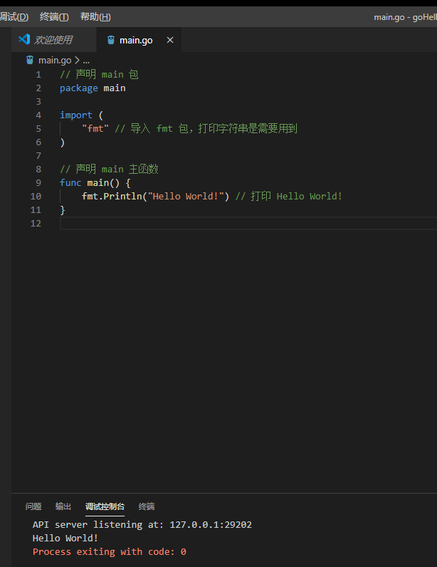

接下来我们来编写第一个 Go 程序 hello.go（Go 语言源文件的扩展是 .go），代码如下：
// 声明 main 包
package main
import (
"fmt" // 导入 fmt 包，打印字符串是需要用到
)
// 声明 main 主函数
func main() {
fmt.Println("Hello World!") // 打印 Hello World!
}
你也许不明白这些代码的含义，没关系，后面的文章里会一一说明。
代码写好了那我们怎么让代码运行起来呢？在命令行里输入：
go run hello.go
此时会输出：
Hello, World!
前面我们配置的开发环境用的是VSCode，后面我们写代码都将在这里面写，那么在VSCode里，你只要按F5，即可查看代码运行的结果，如下图：
